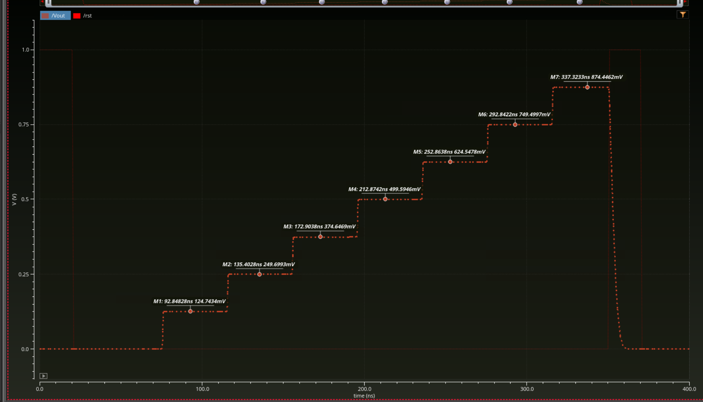
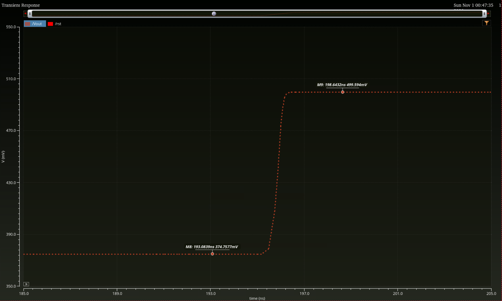

What happens between two bias voltages?
In a 3-bit binary DAC, stepping from code 3 to code 4 changes all three bits even though the desired voltage rises by just one step. My binary-weighted capacitor DAC showed a dip during that transition. I designed a thermometer-coded array to test what happens when only one additional capacitor switches.
I am developing this programmable bias source for cryogenic applications in Cadence Virtuoso and Spectre. The work shown here is transistor-level circuit simulation in TSMC 65 nm. The thermometer-array results below use the typical process corner at 27 °C.
Capacitor array, switches and reset
I built a binary-weighted charge-redistribution DAC with MIM capacitors and six transmission-gate reference switches. I first checked the staircase with an ideal reset, then implemented a MOS reset and varied its width. Resetting a charged output let me inspect discharge and the voltage step when reset opens. For the binary DAC, a finite-delay simulation at code 111 gave a 179.9 µV output spread across −40, 27 and 85 °C with ideal 1 V references and no added load.
For the thermometer version, I designed a reusable capacitor-and-switch unit. Seven such units produce the seven nonzero codes. Each increment connects one more unit to the upper reference. I built the testbench and inspected both the individual plateaus and the waveform at the binary design’s major-carry transition.
Thermometer-array simulation


The step shape and the final bias error answer different questions. The seven sampled plateaus lay about 0.26–0.55 mV below their ideal voltages. I need matched sampling delays and simulation settings for both arrays to quantify how much the architecture changes the transient and plateau errors.
Next design comparison
I prepared a behavioral driver for a 2+1 segmented DAC to compare with the binary and thermometer arrays. As of November 8, 2026, the segmented circuit and its Spectre runs remain pending. The longer-term application is cryogenic biasing, with low-temperature operation still to be validated.
Related analog design · Bandgap reference
In a separate Purdue SoCET project, I independently designed a 1.5 V CMOS bandgap reference, tuned its temperature compensation and checked startup under a slow supply ramp. Schematic simulation gave a nominal temperature coefficient of 5.7 ppm/°C over −40 to 125 °C.